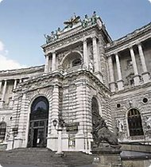
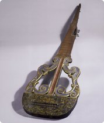
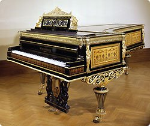
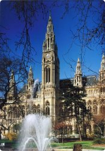
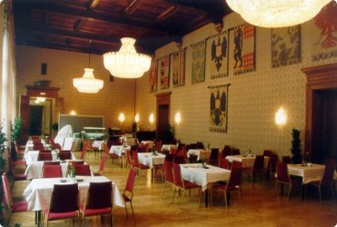

The kick-off for the conference's social programme is the Ice Breaking Event on Sunday at the conference venue. It will start at 6:15 p.m. right after the tutorials. This event is the perfect opportunity for getting to know each other in an informal atmosphere while tasting a selection of great Austrian red and white wines.
The official ISMIR 2007 reception will be on Monday, 24th September, 7:00-10:30 p.m. It takes place at the Neue Burg in the magnificent Jagdplateau hall, and will be accompanied by a buffet.
As a special offer to ISMIR participants, admission to the Collection of Ancient Musical Instruments will be free. This collection comprises many instruments played by famous musicians and composers, and it is the most important of its kind in the world.
|  |  |  |
| © www.khm.at |
The Conference dinner will be on Tuesday at 7:30 p.m. After an impressive walk along Vienna's Ringstraßen boulevard passing by many of Vienna's attractions you will take a tasty dinner in the Coat of Arms Halls (Wappensaal) of the Vienna City Hall (Rathaus).
|  |  |
| © www.wien.at |